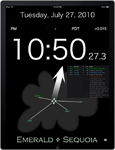

Emerald Chronometer (US $1.99)
Emerald Chronometer (US $1.99)
 Emerald Geneva (Free)
Emerald Geneva (Free)
Universal apps run at full resolution on the iPad, iPhone, and iPod touch. Timestamp requires iPhoneOS 3.1 or later on the iPhone and iPod touch, and iPhone OS 3.2 or later on the iPad. The other apps require iPhoneOS 3.0 or later. None of these apps run on a Mac or PC.)
 Emerald Observatory (US $0.99)
Emerald Observatory (US $0.99)
 Emerald Time (Universal app, Free)
Emerald Timestamp (Universal app, US $0.99)
Universal apps run at full resolution on the iPad, iPhone. iPhone 4, and iPod touch. Observatory runs only on the iPad™ with iPhoneOS 3.2 or later. Timestamp requires iPhoneOS 3.1 or later. Time requires iPhoneOS 3.0 or later. None of these apps run on Mac or PC.)
Copyright © 2010, Emerald Sequoia LLC; last updated: 2010 July 27
Mac, iTunes, iPhone and iPod are trademarks of Apple Inc.